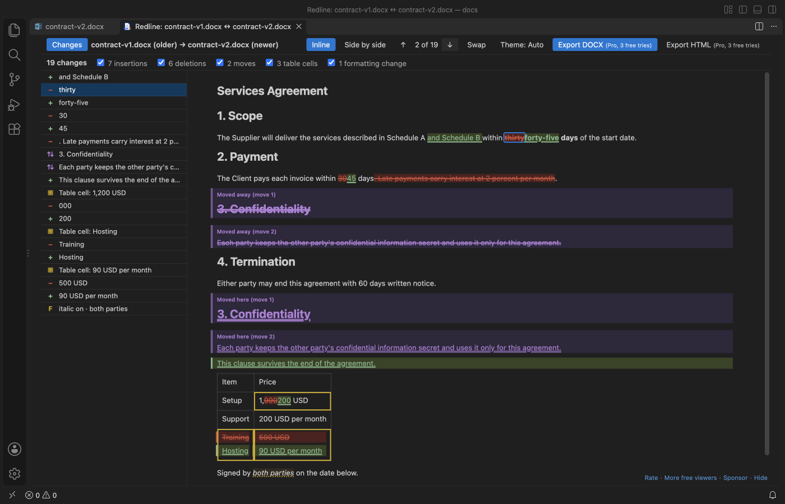

Open files in VS Code and Cursor / Office files
Export Word track changes to Excel
Word has no button that sends tracked changes to Excel, so most people use a VBA macro or a paid add-in. In VS Code, DOCX Viewer compares two versions of a .docx and shows the redline with its change list for free. Its Pro tool Export Change List saves that list as an Excel workbook (a Changes sheet and a Summary sheet), plus a CSV and a Markdown copy. It has 3 free tries, then Zovo Pro is USD 19 once.
Free, MIT license. Extension ID zovo.docx-viewer-vscode, version 0.4.8. Needs VS Code 1.90.0 or newer.

Steps in VS Code
- Install DOCX Viewer from the Marketplace, or press Ctrl+P (Cmd+P on macOS) and run
ext install zovo.docx-viewer-vscode. - Open the newer
.docxin DOCX Viewer. - Start a comparison: this file against Git HEAD, or this file against another document. The on-screen redline and its change list are free.
- Use the filters and the side-by-side mode to read the changes. Tracked changes and comments inside one file also show in the viewer.
Where Zovo Pro saves time
Reading the document, its tracked changes and comments, Copy as Markdown and the on-screen redline with its change list, filters and side-by-side mode are free. Saving the change list as a file is the Pro tool.
A macro has to be found, trusted and fixed for each Word version. Export Change List gives a numbered list of inserted, deleted, replaced, moved and formatting changes, each with its section heading, the paragraph number in the new and old version, the old text, the new text and the words added and removed. Table changes give the table, row and column.
With Export Change List (Zovo Pro)
- With the redline open, run "Export Change List of a Comparison (Pro)..." from the Command Palette.
- Pick where to save. You get one Excel workbook with a "Changes" sheet and a "Summary" sheet with counts per type and per section.
- A
.csvand a.mdcopy are written next to it, for a script or a pull request. - Two documents with no changes write no file and use no free try.
Export Change List works 3 times on your computer before it asks for a license, and a try counts only when you get a result. Opening a file shows no popup and no countdown.
Zovo Pro costs USD 19 once. It is not a subscription, and it turns on the Pro tools in every Zovo extension, not only DOCX Viewer. After a card payment (Stripe) your license key shows on the next page. In VS Code, run "Zovo Pro: Enter Zovo Pro license key" from the Command Palette and paste it. The key is checked on your computer, with no network call. With GitHub Sponsors, pick the "$19 one time" tier, then run "Zovo Pro: I already paid: unlock with GitHub Sponsors" and sign in with the same GitHub account. With PayPal, send USD 19 with "Zovo Pro" in the note and the key comes by email within a day.
A team of 5: USD 59 once, by card or by PayPal. Every rule and every Pro tool is on the Zovo Pro page.
Steps in Cursor, Windsurf or VSCodium
- Open the Extensions view with Ctrl+Shift+X (Cmd+Shift+X on macOS).
- Search for
zovo.docx-viewer-vscodeand click Install. Cursor, Windsurf and VSCodium install from Open VSX, where it is published aszovo/docx-viewer-vscode. - If your editor has no gallery, download the .vsix from the Open VSX page and run "Extensions: Install from VSIX...".
- Then use it the same way as in VS Code.
What DOCX Viewer handles
- Inserted, deleted, replaced, moved and formatting changes.
- Section heading and paragraph number for each change, or table, row and column.
- Excel, CSV and Markdown in one run.
- This file against Git HEAD, or against another document.
What it does not do
- It lists the differences between two versions of a document.
- It runs inside VS Code, Cursor or Windsurf, not inside Word.
Other options
- A VBA macro in Word. Forum threads on Microsoft Q&A and MS Office Forums share macros that loop over the Revisions collection and write author, date and text to a new workbook. Free, but you have to trust and maintain the code.
- Word add-ins. Paid add-ins such as DocTools ExtractChanges Pro put tracked changes and comments in a table and export it to Excel, inside Word.
Install counts and Open VSX status were checked on 11 November 2026. Descriptions in quotes are the extensions' own.
Questions
Does Word have a built-in export of track changes to Excel?
No. Word can print a list of markup, but there is no Excel export. People use a macro, an add-in or a compare tool like this one.
Is my document uploaded?
No. DOCX Viewer works on your computer. The comparison and the export run offline.
Can I see the changes without paying?
Yes. The redline, its change list, the filters and side-by-side mode are free. Only saving the list as Excel, CSV and Markdown is Pro, with 3 free tries.
Does it work in Cursor or Windsurf?
Yes. Cursor, Windsurf and VSCodium install extensions from Open VSX. Search for the extension in their Extensions view and install it there.
More about DOCX Viewer
Read the DOCX Viewer page for every feature and setting, or the source code on GitHub.
Related guides
- DOCX Viewer & ODT Viewer on the VS Code Marketplace (also on Open VSX). Shows Word .docx, .doc, .odt and .rtf files as pages, with a dark mode.
- Open a .docx Word file in VS Code
- Compare two Word documents
- Make a redline of two DOCX files
- Open Word and PowerPoint files without Office
Zovo Pro and support
Zovo Pro: USD 19 once, every Zovo viewer. It turns on the Pro tools in this extension and in the other Zovo extensions you use. The free features stay free.
After a card payment your license key shows on the next page. Paste it with the command "Zovo Pro: Enter a key".
You can also support the work with no Pro:
Need your format supported?
Open a format request with a sample file, and I reply there whether it can be done. For USD 299 once, through this GitHub Sponsors tier, I add your file format or a missing feature to this extension, with tests, within 7 days.